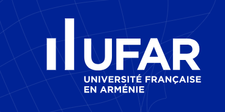

Home
About
Contact
Login
Chat with our Recommendation Bot
Type your interests or preferences below to receive personalized suggestions.
Hello! I am here to help. What are you interested in today?
Send